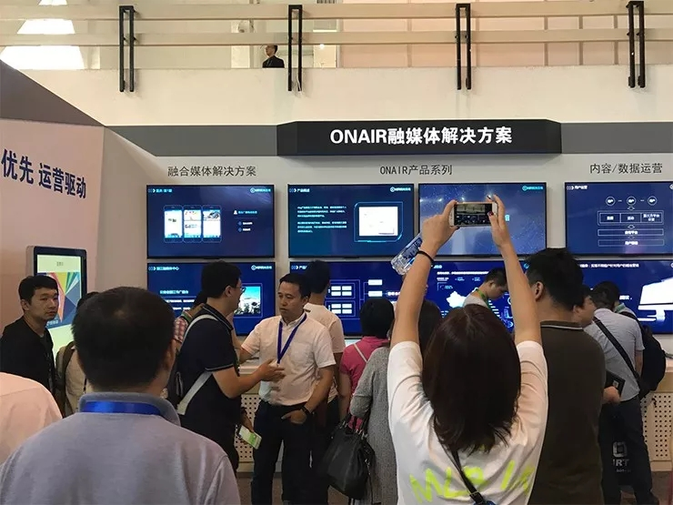
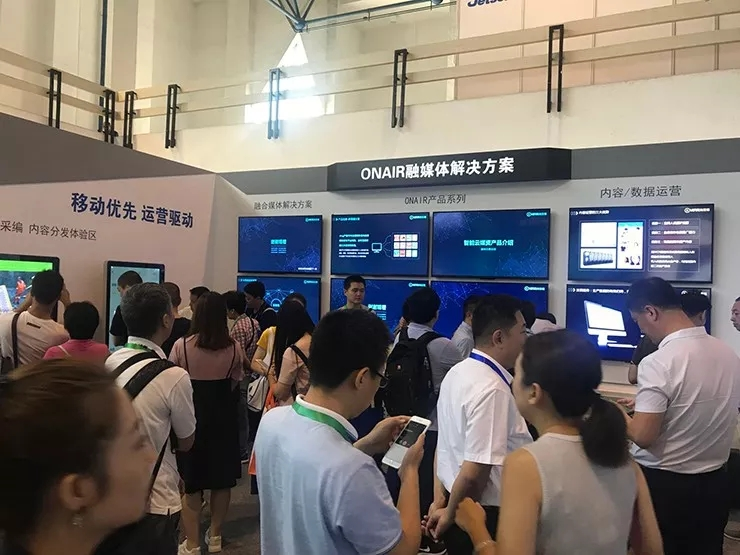
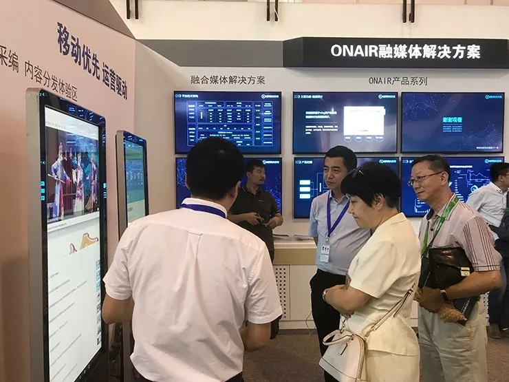
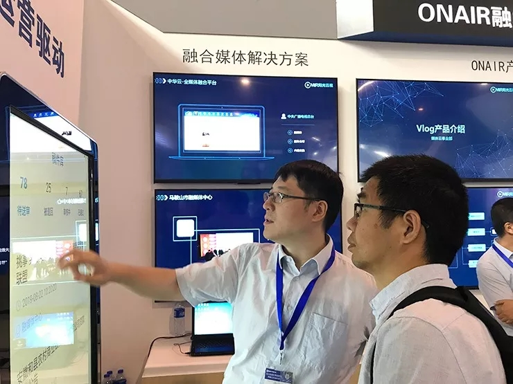
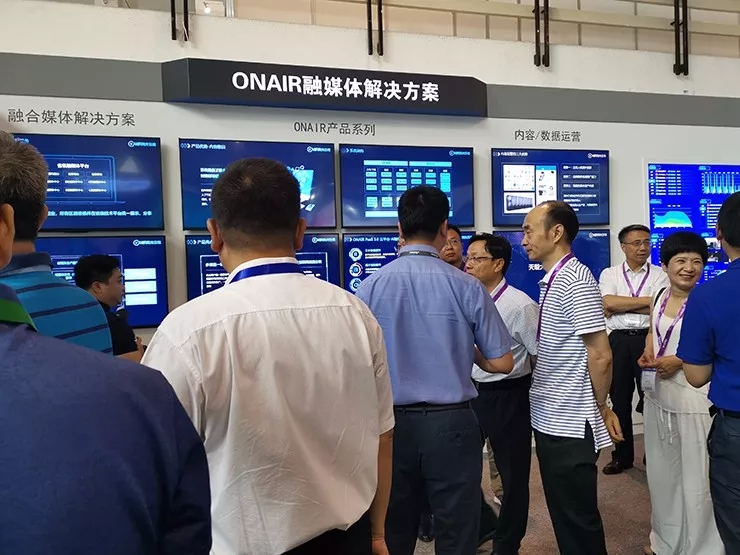
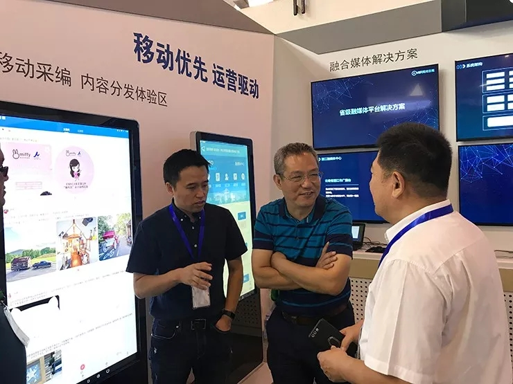

为期4天的BIRTV2019 火热进行中，阳光云视展台依旧热度不减，“移动+运营”理念的展出内容引发省、市、县各级媒体朋友关注。

展会期间，来自山西、湖北、天津、重庆、西藏、拉萨、济南、西宁、吉林、宁波、衡水、淳安、塔里木油田、胜利油田等全国各级电视台、融媒体中心、广播、报社的媒体朋友莅临展台，阳光云视公司副总经理胡兆欣，解决方案中心总经理周亮与各位来宾进行了热情接待与亲切交流。在此，向一直给与我们关注与支持的客户表示最忠心的感谢。





“移动优先，运营驱动 ”精彩不停歇
展会期间，阳光云视ONAIR系列产品及解决方案体验轮番上阵，全方面展现了阳光云视做为国内领先技术服务提供商的综合实力。
1、省级融媒体解决方案
ONAIR媒体云的多租户属性+媒体行业专用中台+轻量化SaaS服务，可以为省级技术平台业务快速开展提供便利支撑。多区县融媒体中心的内容汇聚、多厂商客户端的对接、多分发平台的内容监控撤回，为省级技术平台在本区域媒体融合改革创新中提供多样技术支撑。
2、市、县级融媒体解决方案
创新市级融媒体平台建设思路，市政单位入驻、区县媒体合作、企业业务宣传等，以轻量化平台推动市级融媒体平台建设，为市级媒体机构不在这场媒体融合改革中缺席，提供技术保障。
县级融媒体中心建设，媒体服务快速部署开通，媒体业务向乡镇下沉，与新媒体文明实践中心的线上线下互动，多样化服务的开展，与当地公众号的对接，让最不受人关注的县级新闻舆论宣传闻到了不一样的气息。
3、ONAIR PaaS 3.0 媒体大脑
ONAIR PaaS 3.0云平台是专门为媒体行业打造的“大数据+人工智能”智能媒体大数据决策分析平台。平台搭建了一个分布式、高并发的流式计算框架，适用于离线计算和实时计算场景，完成从数据的采集，到数据的清洗、分析和挖掘。通过“智能媒体数据大脑”，实现信息的大综合、大集成和大协同；为建设媒体智慧服务和管理提供应用决策，助力媒体产业可持续发展升级。
4、Migo
Migo APP是一款将传统的专业化电视生产与新媒体业务相结合，适应移动新闻生产和指挥调度场景，集成移动端多种素材采集、选题策划、媒体生产、内容审核、采访派发、即时通讯、视频连线等功能的移动应用。
5、Vlog产品
Vlog产品用于整合区域内地方政企、事业单位、区域流量主播等自媒体的优质头部资源，通过平台将文章、视频、图集、动态等类型内容发布至移动客户端，为区域媒体单位提供官方权威的传播途径和流量出口
6、内容分发矩阵
内容分发矩阵是阳光云视打造的一款基于云架构的“内容一键分发平台”。通过与互联网十余家头部内容平台合作，实现文章、视频、图集等内容的一次制作、多端分发。除互联网平台以外，还支持向专业媒体机构自身的APP、微站、网站等内容终端进行内容分发。赋能官方媒体在互联网时代，巩固壮大主流思想舆论阵地，不断提高官方媒体的引导力、影响力。
7、智能媒资产品
云视智能云媒资产品采用先进的云计算、大数据、人工智能等技术，为用户提供了一套实现媒体资料的入库、编目、检索、存储、管理、发布于一体的全新的智能云媒体管理平台。
8、天璇大数据
天璇大数据分析平台是一款以统计分析为基础，深度洞察用户数据，提供多种数据源的实时采集与建模，让数据成为企业战略发展的重要资产。通过对客户的PV、UV、直播计量、CDN计量、转码计量和使用排名等多种基础数据的采集，并且配备最终使用用户的信息，如：终端适用类型、地域信息、访问来源、运营商统计等，最终达到提供精准用户画像、助力企业运营能力快速提升的目的。
9、应用画像
PaaS平台应用画像，是基于应用系统的行为数据进行分析的数据产品。“应用画像”基于安全、先进、高效、开放、扩展的原则，将应用系统的行为数据从多个维度进行统计分析，采用图表的形式更加直观立体的体现应用系统的运行情况。